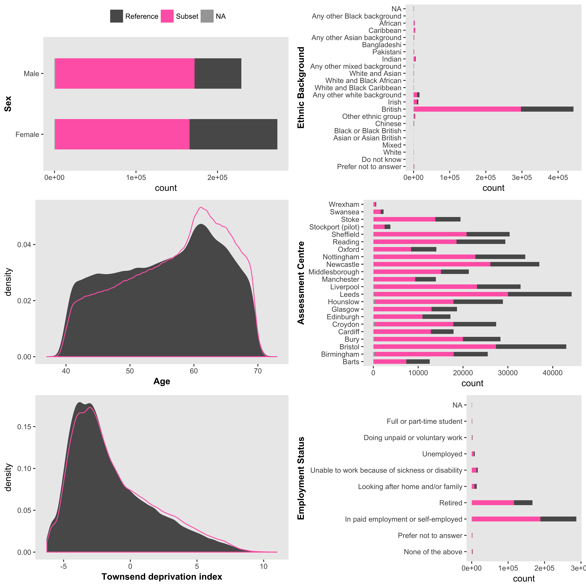

The UK Biobank is a resource that includes detailed health-related and genetic data on about 500,000 individuals and is available to the research community. ukbtools removes all the upfront data wrangling required to get a single dataset for statistical analysis, and provides tools to assist in quality control, query of disease diagnoses, and retrieval of genetic metadata.
Getting started
Download and decrypt your data with the supplied helper programs. To use ukbtools, you need to create a UKB fileset (.tab, .r, and .html):
ukb_unpack ukbxxxx.enc key
ukb_conv ukbxxxx.enc_ukb r
ukb_conv ukbxxxx.enc_ukb docs
ukb_unpack decrypts your downloaded ukbxxxx.enc file, outputting a ukbxxxx.enc_ukb file. ukb_conv with the r flag converts the decrypted data to a tab-delimited file ukbxxxx.tab and an R script ukbxxxx.r that reads the tab file. The docs flag creates an html file containing a field-code-to-description table (among others).
Note. Full details of the data download and decrypt process are given in the Using UK Biobank Data documentation . Updated versions of these helper programs exist. Other than small name changes (underscores removed) they appear to function similarly.
Installing the package
In R,
# Install from CRAN
install.packages("ukbtools")
# Install latest development version
devtools::install_github("kenhanscombe/ukbtools", build_vignettes = TRUE, dependencies = TRUE)
Making a dataset
The function ukb_df() takes the stem of your fileset and returns a dataframe with usable column names.
library(ukbtools)
my_ukb_data <- ukb_df("ukbxxxx")
You can also specify the path to your fileset if it is not in the current directory. For example, if your fileset is in a subdirectory of the working directory called data
my_ukb_data <- ukb_df("ukbxxxx", path = "/full/path/to/my/ukb/fileset/data")
Making a key
Use ukb_df_field to create a field code-to-descriptive name key, as dataframe or named lookup vector.
my_ukb_key <- ukb_df_field("ukbxxxx", path = "/full/path/to/my/ukb/fileset/data")
Note. You can move the three files in your fileset after creating them with ukb_conv, but they should be kept together. ukb_df() automatically updates the read call in the R source file to point to the correct directory (the current directly by default, or the directory specified by path).
Memory and efficiency
To reduce you memory usage, you could save your new UKB dataset with
save(my_ukb_data, file = "my_ukb_data.rda"). Load the dataset withload("my_ukb_data.rda"). A UKB dataset from my largest UKB fileset which included a 2.6 GB .tab file took a little under 2 minutes to create withukb_df. The associated .rda file was 138 MB and loaded in a little under 1.5 mins.
Multiple downloads
If you have multiple UKB downloads, first read each one in, then merge them with your preferred method. You could use ukb_df_full_join which is a thin wrapper around dplyr::full_join applied recursively with purrr::reduce.
ukbxxxx_data <- ukb_df("ukbxxxx")
ukbyyyy_data <- ukb_df("ukbyyyy")
ukbzzzz_data <- ukb_df("ukbzzzz")
ukb_df_full_join(ukbxxxx_data, ukbyyyy_data, ukbzzzz_data)
Repeated variables.
The join key is set to “eid” only (default value of the
byparameter). Any additional variables common to any two tables will have “.x” and “.y” appended to their names. If you are satisfied the additional variables are identical to the original, the copies can be safely deleted. For example, ifsetequal(my_ukb_data$var, my_ukb_data$var.x)isTRUE, then my_ukb_data$var.x can be dropped. Adlyr::full_joinis like the set operation union in that all abservation from all tables are included, i.e., all samples are included even if they are not included in all datasets.Repeated variable names within UKB datasets are unlikely to occur.
ukb_dfcreates variable names by combining a snake_case descriptor with the variable’s index and array. This should be sufficient to uniquely identify the variable. However, if an index_array combination is incorrectly repeated in the original UKB data, this will result in a duplicated variable name. We observed two instances. The variables were encoded *–0.0*, * –1.0*, * ––1.0*, and `ukb_df` created a variable named *var_0_0*, *var_1_0*, *var_1_0*. This is probably a typo that should have been * –0.0*, * –1.0*, * –2.0*, consistent with UKB official documentation describing the field as having 3 values for index. We have provided `ukb_df_duplicated_names` to identify duplicated names within a dataset. This will allow the user to make changes as appropriate. We expect the occurrence of such duplicates will be rare.
Exploring primary demographics of a UKB subset
As an exploratory step you might want to look at the demographics of a particular subset of the UKB sample relative to a reference sample. For example, using the nonmiss.var argument of ukb_context will produce a plot of the primary demographics (sex, age, ethnicity, and Townsend deprivation score) and employment status and assessment centre, for the subsample with data on your variable of interest compared to those without data (i.e. NA).
ukb_context(my_ukb_data, nonmiss.var = "my_variable_of_interest")

Figure 1 Primary demographic data for a UKB subset of interest.
It is also possible to supply a logical vector with subset.var to define the subset and reference sample. This is particularly useful for understanding a subgroup within the UKB study, e.g., obese individuals below age 50.
subgroup_of_interest <- (my_ukb_data$bmi > 40 & my_ukb_data$age < 50)
ukb_context(my_ukb_data, subset.var = subgroup_of_interest)
Retrieving ICD diagnoses
All ICD related functions begin ukb_icd_. Type ukb_icd_ tab to see the family of functions. The full ICD “code-meaning” tables are available as datasets (icd9codes, icd10codes). ICD chapter-level tables describing disease blocks are also available for query as datasets (icd9chapters, icd10chapters)
To retrieve the full diagnosis of an individual (combine multiple individuals with c())
ukb_icd_diagnosis(my_ukb_data, id = "0000000", icd.version = 10)
To retrieve the “meaning” of an ICD code use icd_code. Again, you can look up multiple codes by combining them with c().
ukb_icd_code_meaning(icd.code = "I74", icd.version = 10)
Search for a class of diseases with a keyword. Supplying multiple keywords with c(), will return all ICD entries containing any of the keywords.
ukb_icd_keyword("cardio", icd.version = 10)
You can calculate the prevalence of a diagnosis in the UKB study (or a subset of the full sample) using ukb_icd_prevalence. The icd.diagnosis argument takes a regular expression, and so can also be used to retrieve prevalence of a disease “class”, i.e., the proportion of individuals with any diagnosis in the disease class.
# ICD-10 code I74, Arterial embolism and thrombosis
ukb_icd_prevalence(my_ukb_data, icd.version = 10, icd.diagnosis = "I74")
# ICD-10 chapter 9, disease block I00–I99, Diseases of the circulatory system
ukb_icd_prevalence(my_ukb_data, icd.version = 10, icd.diagnosis = "I")
# ICD-10 chapter 2, C00-D49, Neoplasms
ukb_icd_prevalence(my_ukb_data, icd.version = 10, icd.diagnosis = "C|D[0-4].")
To retrieve frequency for one or more ICD diagnoses by the levels of a reference variable, e.g., sex (male or female) use ukb_icd_freq_by. If the variable is continuous, it is divided into N approximately equal-sized groups (default = 10) within which ICD diagnosis frequency is calculated. ukb_icd_freq_by also includes an option to produce a figure of ICD diagnosis frequency by reference variable. Diagnoses of interest are passed to icd.code. The default ICD codes are the WHO top 3 cause of death worldwide (2015): coronary artery disease (CAD), cerebrovascular disease/ stroke, lower respiratory tract infection (LTRI).
# To plot the frequency of the default ICD codes with respect to BMI
ukb_icd_freq_by(my_ukb_data, reference.var = "body_mass_index_bmi_0_0", freq.plot = TRUE)
Setting freq.plot = FALSE (default) returns a dataframe of the frequencies. Values for the reference variable group ranges are in the column “group”.
Retrieving genetic metadata
If you are doing any downstream genetic analyses, you will need the genetic metadata (which should be in you phenotype dataset). Detailed information is available on UKB genotyping and quality control and imputation and association.
All genetic metadata related functions begin ukb_gen_. Typing ukb_gen_ tab opens a dropdown menu for this group of functions.
You can collect the genetic metadata (including recommended exclusions, genetic sex, genetic ethnicity, chip, etc.), and principal components with
my_gen_meta <- ukb_gen_meta(my_ukb_data)
my_gen_pcs <- ukb_gen_pcs(my_ukb_data)
A list of IDs for recommended exclusions and heterozygosity outliers (+/- 3*SD) can be retrieved
ukb_gen_excl(my_ukb_data)
ukb_gen_het(my_ukb_data)
For a data.frame of raw heterozygosity data
ukb_gen_het(my_ukb_data, all.het = TRUE)
ukb_gen_rel returns a data.frame with id, pair (a numeric identifier for related pairs), and kinship (kinship coefficient). For a count of related samples by degree of relatedness use ukb_gen_rel_count. Set the argument plot = TRUE to replicate the plot on page 15 of the UKB genotyping and quality control documentation, for your subgroup of interest.
my_gen_rel <- ukb_gen_rel(my_ukb_data)
# To get a count and plot of degree of relatedness
ukb_gen_rel_count(my_gen_rel, plot = TRUE)
Read and write
ukbtools includes functions to write phenotype and covariate files for BGENIE and PLINK. BGENIE phenotype and covariate files are space-delimited, include column names, and have missing values coded as -999. They must also be in .sample file order. ukb_gen_write_bgenie sorts input data to match .sample file id order and writes the data to disk.
# Read .sample file supplied with bulk genetic data
my_sample_file <- ukb_gen_read_sample("path/to/sample_file")
# Write a BGENIE format phenotype or covariate file
ukb_gen_write_bgenie(
my_ukb_data,
path = "path/to/bgenie_input_file",
ukb.sample = my_sample_file,
ukb.variables = c("variable1", "variable2", "variable3")
)
Note. The BGENIE usage page uses the example files example.pheno and example.cov - it is not clear whether the suffixes are obligatory. Use them to be safe.
PLINK phenotype and covariate files are either space- or tab-delimited, column names are optional, first two columns must contain family ID and individual ID respectively, and missing values are “normally expected to be encoded as -9” but also “nonnumeric values such as ‘NA’ … (are) treated as missing”. ukb_gen_write_plink writes a space-delimited file with column names, UKB ID is automatically written to column 1 and 2 and labelled FID IID, and missing values are coded as NA. The missing value to be used can be changed with the na.strings argument. See PLINK standard data input for further details.
# Write a PLINK format phenotype or covariate file
ukb_gen_write_plink(
my_ukb_data,
path = "path/to/plink_input_file",
ukb.variables = c("variable1", "variable2", "variable3")
)
PLINK does not require that individuals in phenotype and covariate files are in any particular order, but you may want to reconcile the individuals you include in your analysis with those in the fam file (from your hard-called data). Read the fam file into R with ukb_gen_read_fam
Exclusions
Note. The exclusions referred to in this section are the combined UKB recommended exclusions, Affymetrix quality control for samples, bileve genotype quality control, heterozygosity outliers (+/- 3*SD), genetic ethnicity outliers (based on Genetic Ethnic Grouping, field code 22006), and one random member of each related pair (including Duplicates/MZ twins, 1st-, 2nd-, and 3rd-degree relatives).
BGENIE does not have an option to read exclusions. You can replace data values in a phenotype with NA where the individual is to-be-excluded based on genetic metadata considerations. Writing the updated variable to your phenotype file (with the supplied write functions), effectively excludes the individuals from any analysis.
my_ukb_data$height_excl_na <- ukb_gen_excl_to_na(my_ukb_data, x = "height")
PLINK --remove takes a space- or tab-delimited file with family IDs in the first column and individual IDs in the second column, without column names. See PLINK input filtering for further details. (The missing value approach described above also works for PLINK.)
ukb_gen_write_plink_excl("path/to/plink_input_file")